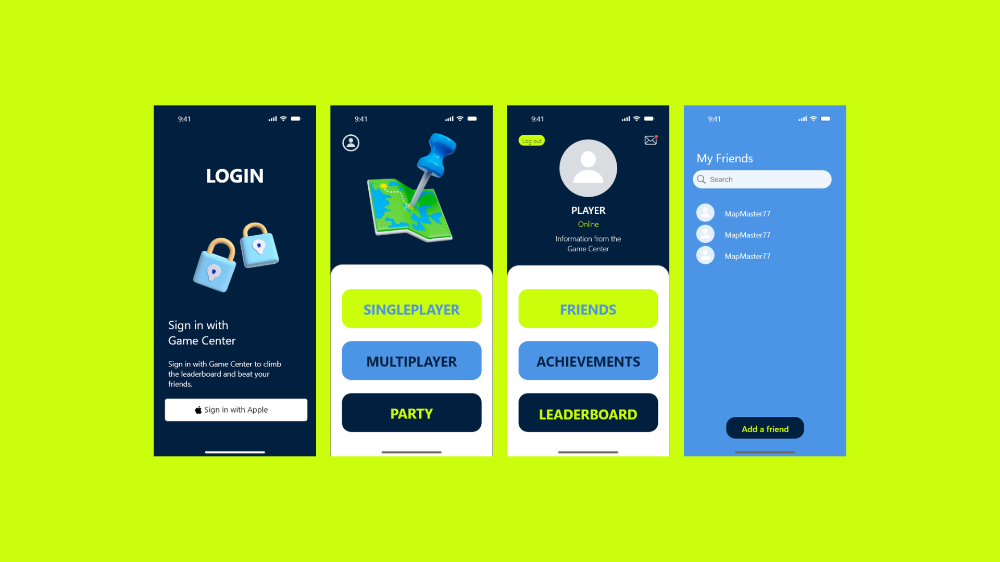

GeoKnack
GeoKnack entstand im Rahmen eines Hochschulprojekts, bei dem wir eine iOS-App von der ersten Idee
bis zur fertigen Umsetzung entwickelt haben. Die Aufgabe bestand darin, eine iOS-App mit Anbindung
an das Apple Game Center zu entwickeln. Dabei konnten wir entweder eine bestehende App neu gestalten
und nachprogrammieren oder eine eigene Spielidee konzipieren. Wir entschieden uns bewusst für die
Neuentwicklung einer bereits bestehenden App. Dafür orientierten wir uns am Spielprinzip von
GeoGuessr, um den technischen Aufbau sowie die Anbindung an Google Street View besser zu verstehen
und nachzuvollziehen.
Das Projekt wurde in einem dreiköpfigen Team umgesetzt, wobei jede Person
einen eigenen Schwerpunkt übernahm. Gleichzeitig war es wichtig, auch die Aufgabenbereiche der
anderen zu verstehen, um die einzelnen Komponenten zu einem funktionierenden Gesamtsystem
zusammenzuführen. Ich war für das erste Designkonzept und den Userflow verantwortlich, die
anschließend gemeinsam mit einer Teamkollegin weiter ausgearbeitet wurden. Darüber hinaus
entwickelte ich das Frontend für den Account-, Login- und Home-Bereich sowie die Anbindung des
Login-Prozesses an das Apple Game Center.
